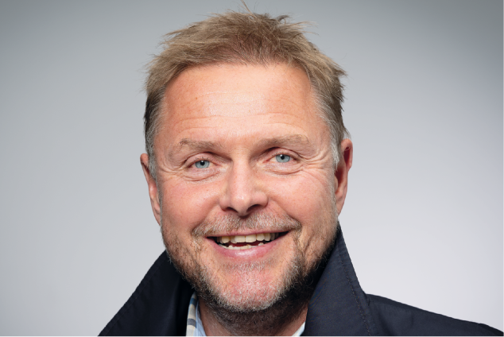

Kystrederiene i stadig utvikling
Denne høsten har fortsatt med høyt
aktivitetsnivå både i medlemskontakt
og i oppfølging av politiske saker. Vi
opplever at økt aktivitet og synlighet
slår positivt ut for medlemsoppslut-
ningen, samtidig som markedene
innbyr til nye investeringer. Selv om
det i høy grad er utfordringer også, så
er vi inne i en god utvikling, både for
næringen og som organisasjon.
Siste helgen i november var jeg til
stede på den tradisjonelle jule-
middagen til Bodø Lokalforening der
det ble valgt nytt styre. Det er et stort
ønske både fra Kystrederiene og
Bodø Lokalforening å øke aktiviteten
slik at vårt maritime miljø forsterkes.
Det er på denne bakgrunn kommet
forslag om å etablere en underfor-
ening som
dekker Nordland, Troms
og Finnmark
. Får vi dette til så vil det
være naturlig å endre navn slik at
medlemmene opplever en naturlig
tilhørighet. Bodø
lokallag re-
presenterer på mange måter
Kystrederienes DNA; noe vi også må
bære med oss sammen med hav-
bruksbåter og brønnbåtproblematikk.
Noe av det viktige hver høst er fram-
legging av statsbudsjettet i oktober.
Da gjelder det å være i beredskap og
kunne argumentere under komité-
høringene noen uker senere. I år var
det lite nytt, men fortsettelse av etab-
lerte tiltak. Vi er skuffet over den økte
avgift på LNG ser ut til å feste seg
selv om vi har argumentert med kon-
kurransevridning, og i tillegg har
levert oppdaterte rapporter på at av-
giften vil forsinke satsningen på LNG
hybrid. LNG hybrid er den tilgjengelige
teknologi med best miljøeffekt. Til-
skuddsordningen til godsoverføring
vil fortsette, men vi har nå meldt til-
bake at den ikke har fungert etter
intensjonene og bør avskaffes.
Statens tilskudd bør eksempelvis
heller gå til økt statlig finansering av
trafikksentralene, noe som vil
komme alle til gode.
I Samferdselsdepartementet
arbeides det med en ny nærskips-
fartsstrategi som del av neste Na-
sjonale transportplan (NTP). Vi var i
november invitert til departementet
for å legge fram våre synspunkter og
prioriteringer. Vi mener fortsatt at
havnene er det kritiske ledd i all sjø-
transport og at samfunnet (les Kyst-
verket) må gi et klart samfunns-
oppdrag til de kommunale havner
med generelle retningslinjer for hav-
nedrift, prosedyrer, prissetting og
effektivitetsmål.
Det er ingen tvil om at miljøspørs-
mål blir stadig viktigere politisk og at
ansvaret gradvis skyves nedover i
verdikjeden. Vi kan mene hva vi vil,
men dette vil være en stadig viktigere
drivkraft i utviklingen. I løpet av høste
n
har vi lansert et prosjekt for flåtefor-
nyelse med støtte fra Innovasjon
Norge
som vil legge til rette for ut-
vikling av nye fartøysprosjekter
basert på nye miljøløsninger. Gjen-
nom regionale presentasjonsmøter
har vi så langt fått med et 30-talls
prosjekter fra hele bredden av
næringen. En viktig del av prosjektet
er å arbeide for å få justert innretningen
av de ulike offentlige ordninger slik at
de kan brukes til å realisere flest
mulig
av innkomne prosjekter med
miljøgunstige fartøyer som igjen
styrker bærekraften i sjøtransporten.
Flåtefornyel-
sesprosjektet er inngående beskrevet
i dette nummer av Kystrederen.
Nautilus Sjø har denne høsten kjøpt
seg inn i teknologiselskapet E-Sea
Solution AS med 50% eierandel. NAS
vil gjennom dette kunne tilby et digi-
talt sikkerhetsstyringsprogram for
mindre fartøyer og på nyåret vil et
komplett digital ISM-system bli lan-
sert. Dette vil omsider realisere en
lenge etterlengtet tjeneste.
Forutsetningen for et høyt
aktivitets-
nivå i foreningen er en effektiv og selv-
drevet administrasjon. I sommer fikk
vi på plass vår nye næringspolitiske
rådgiver innen Aqua Shipping, Linn
Therese Skår Hosteland, som har
tilført en sterk og viktig kompetanse.
Ved årsskiftet tiltrer også Kjell Hauge,
Advokat med bred erfaring fra for-
valtning og næringsliv inkludert
maritim erfaring og som vil bli leder
av arbeidsgiver- og forsikringssiden.
Når vi ser tilbake på 2018 og også
tar med Kystalliansen med Sjømat-
bedriftene, vil vi se at Kystrederiene
er inne i en utviklingsprosess som
skal gjøre oss enda bedre til å gi
merverdi og ivareta interessene til
våre medlemsbedrifter.
Vi nærmer oss årets slutt og en
julehøytid som mange vil bruke til
ettertanke og nærvær med sine
kjære i kombinasjon med noen dager
vel fortjent ferie.
Takk for samarbeidet så langt og
alle ønsker om en god jul og et godt
nytt år.
Tor Arne Borge
